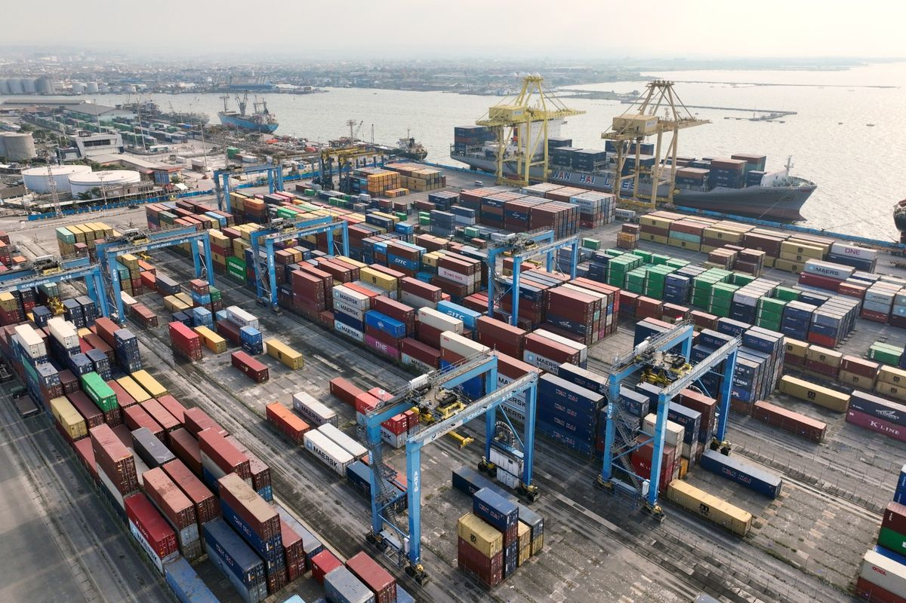

Peta Jalan Harmonisasi Insentif Pajak Daerah Bagi Sektor Industri Manufaktur Guna Menjaga Resiliensi
Formulasi kebijakan pemotongan retribusi strategis guna memicu stabilitas volume produksi pabrikan lokal menghadapi fluktuasi pasar global.
Kamar Dagang dan Industri Kota Surabaya menjadi mitra strategis Pemerintah Kota dalam menghubungkan pelaku usaha, UMKM, dan investor demi pertumbuhan ekonomi yang inklusif.

Kami merancang instrumen pertumbuhan yang adaptif terhadap disrupsi pasar dan kemajuan teknologi digital.
Menjadi jembatan kritis dan strategis antara regulasi pemerintah daerah dengan kebutuhan rill para pelaku industri demi kepastian hukum investasi.
Pelajari SelengkapnyaProgram pendampingan teknis integrasi cloud, optimasi ekosistem supply chain, dan adopsi fintech.
Pelajari SelengkapnyaFasilitasi eksportir daerah menuju pasar non-tradisional, business matching regional, dan sertifikasi internasional.
Pelajari SelengkapnyaMenyajikan informasi potensi Surabaya sebagai kota industri, perdagangan, MICE, dan pariwisata bagi calon investor.
Pelajari SelengkapnyaIkuti rangkaian inisiatif, koordinasi regulasi, dan pameran dagang yang dirancang untuk memperluas jangkauan pasar Anda.
KADIN Institute, Surabaya
Ruang Transit Utama, Sekretariat KADIN Surabaya
Analisis mendalam, kebijakan terbaru, dan agenda penting yang memengaruhi dinamika pasar industri Kota Surabaya.
Formulasi kebijakan pemotongan retribusi strategis guna memicu stabilitas volume produksi pabrikan lokal menghadapi fluktuasi pasar global.
Penerapan integrasi sistem operasional gate otomatis baru untuk mengikis waktu tunggu logistik kargo komoditas primer.
Dihadiri perwakilan Wali Kota Surabaya, kepengurusan baru menegaskan komitmen kolaborasi dan pertumbuhan inklusif.
Dapatkan akses jaringan bisnis lintas negara, perlindungan regulasi komprehensif, dan fasilitas pendanaan modal kerja khusus untuk anggota terverifikasi KADIN Surabaya.